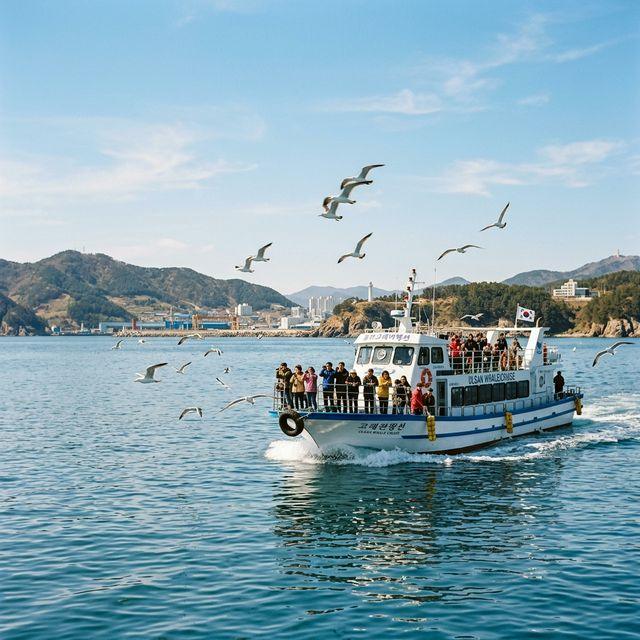
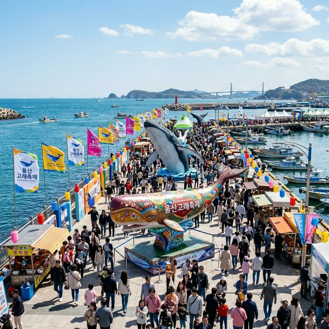
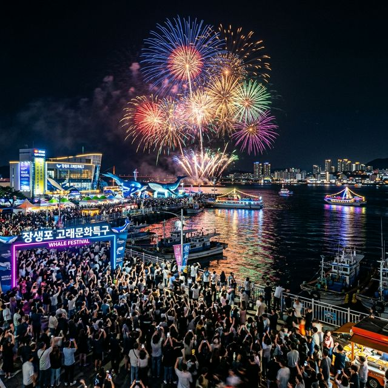

[주요 포인트]
동해안 최대 해양 축제인 2026 울산 장생포 고래축제가 드디어 막을 올립니다. 포경업의 중심지였던 장생포의 역사적 상징성을 기리며, 고래바다여행선부터 밤하늘을 수놓는 환상적인 멀티미디어 불꽃쇼까지
촘촘한 기획으로 무장했습니다. 가족 단위 여행객은 물론 데이트 코스로도 손색없는 이곳의 주차 꿀팁과 한정판 예약 프로그램까지 철저하게 분석해 드립니다.
1. 2026 울산 장생포 고래축제 일정 및 행사 개요
매년 5월이면 울산 남구 장생포 고래문화특구 일대는 수많은 관광객으로 인산인해를 이룹니다. 2026년 축제는 5월 중순, 푸른 바다 빛이 가장 아름다워지는 시기에 맞춰 개최됩니다. 이번 테마는 "장생포,
미래의 바다로 뛰어오르다"로, 고래 보호의 메시지와 다채로운 즐길 거리가 조화롭게 어우러졌습니다.
메인 무대인 장생포 앞바다 광장에서는 매일 저녁 대규모 음악 공연과 개막행사가 열립니다. 동시에
고래생태체험관, 고래박물관, 고래문화마을 일대 전체가 축제의 부스로 탈바꿈하여, 어디를 방문하든 축제의 열기를 느낄 수 있습니다. 특히 지역 상인들이 자랑하는 먹거리 촌도 올해 규모가 더욱
커졌습니다.
장생포는 과거 포경 기지로 번성했던 특수한 역사를 지니고 있습니다. 축제의 장소 자체가 거대한 박물관이 되는 셈이죠. 단순한 놀거리를 넘어, 과거의 향수와 생태계의 소중함을 동시에
돌아볼 수 있는 교육적인 역할도 충실히 수행하고 있습니다.
2. 고래바다여행선: 크루즈 투어 승선권 예매 전쟁
이 축제의 진가를 확인하려면 고래바다여행선 탑승을 빼놓을 수 없습니다. 울산 앞바다를 유람하며 운이 좋으면 자연 상태의 참돌고래 떼를 직접 목격할 수 있는 국내 유일의
관경(觀鯨) 체험입니다. 바람을 가르며 바다로 나가는 그 통쾌함은 일상의 스트레스를 날려버리기에 충분합니다.
하지만 이 크루즈 티켓은 축제 기간 중 '피켓팅(피 튀기는 티켓팅)'이라 불릴 정도로
대기가 치열합니다. 2026년 축제 기간 특별 운항 스케줄은 방문 3~4주 전부터 공식 홈페이지를 통해 오픈되므로, 여행 일정이 확정되는 대로 가장 먼저 승선권부터 확보하시기를 강력히
권장합니다.
만약 고래를 발견하지 못하더라도 실망할 필요는 없습니다. 시원하게 펼쳐진 동해안을 감상하며 장생포 앞바다의 비경을 즐기는 것 자체로도 충분한 힐링이 됩니다. 뱃멀미가 심하신 분들을
위해 출항 최소 30분 전 멀미약을 복용하는 것도 중요한 꿀팁입니다.

오랜 기다림 끝에 바다로 나선 고래바다여행선과 갈매기 떼의 풍경 / AI 제작 이미지
3. 야간 멀티미디어 불꽃쇼 명당 완벽 가이드
낮의 축제만큼이나 기다려지는 것이 바로 야간 멀티미디어 고래 불꽃쇼입니다. 어둠이 짙게 깔린 장생포 앞바다 위로 수천 발의 폭죽이 쏘아 올려지며 장관을 연출합니다. 올해는 단순한
불꽃이 아닌 드론과 레이저, 워터 스크린을 결합한 입체적인 미디어 아트를 선보인다고 하여 기대감이 매우 높습니다.
그렇다면 최고의 관람 명당은 어디일까요? 첫 번째는 인파의 중심인 메인
광장입니다. 음악의 비트와 폭죽 소리를 온몸으로 느낄 수 있으나, 자리 선점 전쟁이 몹시 치열합니다. 두 번째 추천 장소는 조금 떨어진 '고래문화마을언덕' 부근입니다. 약간의 발품을 팔면, 군중을 벗어나 탁
트인 항구 전체와 불꽃을 한눈에 담을 수 있습니다.
바닷가라서 밤이 되면 바닷바람이 꽤 매섭게 불 수 있습니다. 담요나 두툼한 외투를 챙기시고, 돗자리를 깔고 기다리기 좋은 장소인 만큼 보온병에
따뜻한 차나 커피를 챙겨가시면 한결 로맨틱한 불꽃놀이를 감상할 수 있을 것입니다.
4. 고래문화마을 복고풍 골목길 체험
불꽃쇼를 보기 전 오후 시간에는 장생포 고래문화마을을 거닐어 보세요. 이곳은 1960~70년대 포경업이 최고조에 달했던 시절의 장생포 마을을 실물 크기로 재현한 세트장입니다.
흑백 영화 속으로 걸어 들어온 듯한 복고 감성이 가득하여, 남녀노소 막론하고 인생 사진을 건지기에 최고의 장소입니다.
옛날 교복이나 전통 의상을 대여해 입고 다방에서 차를 마시거나, 옛날
사진관에서 기념촬영을 하는 것이 인기 코스입니다. 달고나 만들기, 딱지치기 등 기성세대에게는 향수를, 젊은 세대에게는 신선함을 안겨주는 레트로 체험들이 골목 곳곳에 준비되어 있습니다.
마을 안에는
실물 크기의 고래 해체장 모형이나 선장의 집 등 역사적 고증을 거친 전시물들도 마련되어 있습니다. 그저 예쁜 사진만 찍고 지나치기보다는 해설사의 이야기를 곁들여 들으면 장생포 사람들의 치열했던 삶의 궤적이
더욱 생생하게 다가옵니다.

파란 봄 하늘 아래, 활기찬 축제 분위기를 뽐내는 장생포 특구의 고래 조형물 / AI 제작 이미지
5. 실내 투어의 핵심: 장생포 고래생태체험관
축제 기간 중 날씨가 덥거나 빗방울이 떨어진다면 주저 없이 장생포 고래생태체험관으로 대피(?)하시기 바랍니다. 이곳은 단순한 아쿠아리움이 아닙니다. 실제 큰돌고래들이 유유히
헤엄치는 모습을 볼 수 있는 국내 최고 수준의 생태관으로, 바닷속 해저터널을 걷다 보면 마치 고래와 함께 유영하는 듯한 착각에 빠집니다.
가장 인기 있는 프로그램은 정해진 시간에만 관람할 수 있는
돌고래 생태 설명회입니다. 사육사들이 돌고래의 습성과 먹이 활동에 대해 설명하며, 돌고래들의 다이내믹한 수면 점프도 생생하게 눈에 담을 수 있습니다. 아이를 동반한 가족 여행객이라면 하루 일정표에서 절대
누락시켜서는 안 될 필수 코스입니다.
또한, 2026축제 한정으로 생태관 내에 해양 환경 보호를 주제로 한 특별 전시존이 운영됩니다. 고래들의 터전인 바다를 지키기 위해 우리가 실천할 수 있는
플라스틱 저감 캠페인 등이 진행되니, 축제를 즐기며 사회적 책임감도 함께 느끼는 뜻깊은 시간이 될 것입니다.
6. 미식의 향연: 고래빵 시식 및 로컬 맛집 정보
울산에 왔다면 이곳에서만 맛볼 수 있는 특별한 먹거리들을 경험해야겠죠. 그중 가장 가볍고 기분 좋게 즐길 수 있는 것이 바로 장생포 명물 고래빵과 고래콘 아이스크림입니다. 생소한
모양만큼이나 달콤한 맛은 축제 무대를 돌아다니며 당을 충전하기에 가장 완벽한 길거리 간식입니다.
제대로 된 한 끼를 원하신다면 인근 장생포항 부근의 식당가를 공략해 보세요. 과거와 달리 현재는
포획이 금지되어 있지만, 합법적으로 유통되는 한정적인 고래 고기를 코스 요리로 선보이는 유서 깊은 로컬 식당들도 여전히 명맥을 잇고 있습니다. 고래 고기 특유의 독특한 육향이 궁금하신 분들에게는 평생 잊지
못할 미식 경험이 될 것입니다.
혹여나 고래 고기가 부담스러운 분들이라면, 울산 바다에서 갓 잡아 올린 싱싱한 해산물 정식이나 참가자미 회, 물회 등 대안이 무궁무진합니다. 워낙 유동 인구가 많은
축제 기간이니, 현지 상인들이 추천하는 회센터로 직행하는 것도 실패 없는 선택입니다.
7. 교통 및 주차장 확보를 위한 특급 전략
장생포는 삼면이 바다로 둘러싸인 항만 구조상 진입로가 제한적입니다. 축제 기간 주말 점심시간 이후에는 사실상 장생포로 향하는 모든 도로가 마비 상태에 이릅니다. 이를 대비한 최고의 전략은 울산
관내 셔틀버스를 적극적으로 활용하는 것입니다.
KTX 울산역이나 태화강역, 주요 공영주차장 등에서 축제장 입구까지 쉴 틈 없이 무료 셔틀버스가 오갑니다. 굳이 자차로 행사장
끝까지 진입하려다 두세 시간을 차에서 허비하기보다는, 외곽 거점 주차장에 차량을 세워두고 셔틀로 편안하게 오가는 것이 100배 현명합니다.
불가피하게 자차를 가져가셔야 할 경우, 오전 9시 이전에
고래박물관 부설 주차장 진입을 목표로 움직이셔야 합니다. 축제 조직위원회에서 공식 SNS를 통해 실시간 주차장 만차 현황을 중계할 예정이니, 방문 전 반드시 이 알림을 체크하고 동선을 수정하시기 바랍니다.
8. 주변 연계 관광 코스: 태화강 국가정원
고래축제를 반나절 정도 충분히 즐기셨다면, 차로 약 20분 거리에 있는 태화강 국가정원으로 향해 보시는 걸 강력히 추천합니다. 울산 도심을 가로지르는 십리대숲의 시원한 청량감은
바닷가의 짠기와 왁자지껄했던 축제의 열기를 잠시 식혀주는 최상의 휴식처입니다.
태화강 국가정원 역시 5월 중순이면 형형색색의 봄꽃이 만개하여 거대한 정원 전체가 꽃으로 뒤덮입니다. 이곳에서 피크닉
매트를 깔고 누워, 하늘 높이 뻗은 대나무 사이로 스미는 햇살을 즐기다 보면 도심 속에서 찾을 수 있는 완벽한 힐링을 맛볼 수 있습니다.
해가 지고 나면 십리대숲 내의 은하수길이 조명을 밝힙니다.
수만 개의 레이저가 대나무 잎사귀에 부딪혀 마치 밤하늘의 쏟아지는 별빛 속에 서 있는 듯한 착각을 불러일으킵니다. 장생포의 야간 불꽃쇼와는 또 다른, 고즈넉하면서도 로맨틱한 밤 산책 코스입니다.

바닷물을 아름답게 캔버스 삼은 야간 멀티미디어 불꽃쇼의 장관 / AI 제작 이미지
9. 2026 방문 총평 및 팁
2026년 울산 장생포 고래축제는 단순히 고래라는 매개체를 넘어, 동해안의 역사와 미래 기후 환경의 중요성까지 아우르는 복합 문화 콘텐츠로 진화했습니다. 전통적인 과거, 활기찬 현재, 지속
가능한 미래가 함께 숨 쉬는 특별한 해양 축제입니다.
이 거대한 축제를 가장 효율적으로 즐기기 위해서는 미리 관심 있는 프로그램의 동선을 짜두는 것이 필수입니다.
고래바다여행선(바다) -> 고래문화마을(육지) -> 생태체험관(실내) -> 야간 불꽃쇼(야간)로 이어지는 시간대별 전략을 수립하면 알찬 하루 코스가 완성됩니다.
푸른 바다의 향기와 웅장한 불꽃,
그리고 과거로의 시간 여행까지. 올봄 5월, 가족의 손을 잡고 동해안의 열정이 결집된 울산 장생포로 떠나 평생 잊지 못할 찬란한 추억의 한 페이지를 장식해 보시기 바랍니다.